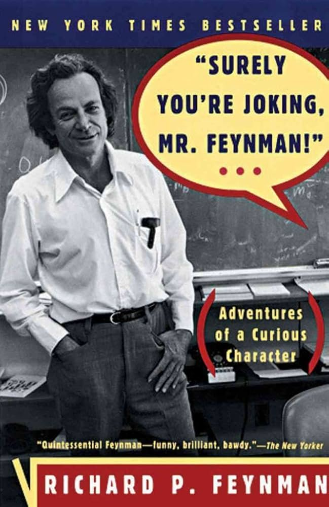
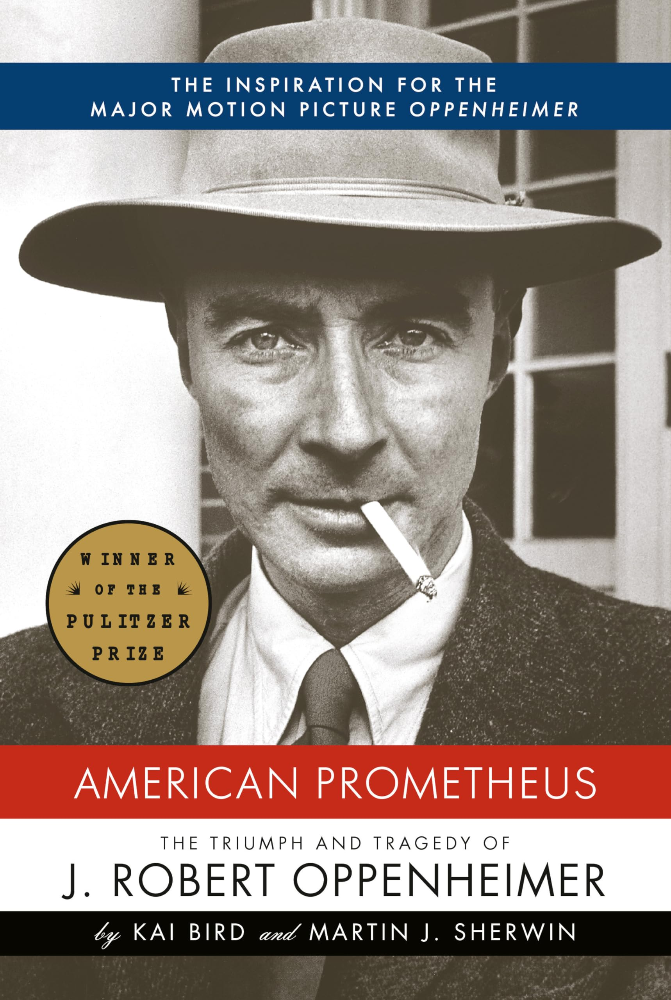
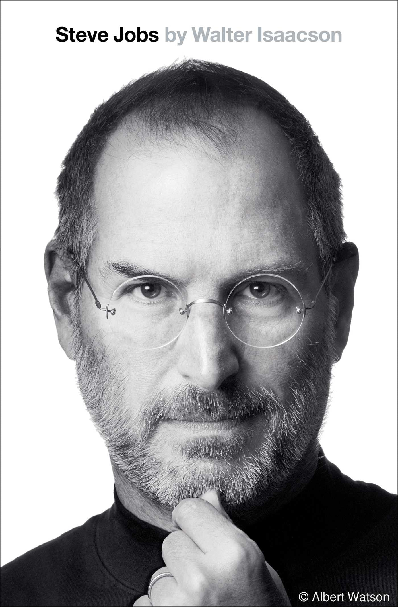
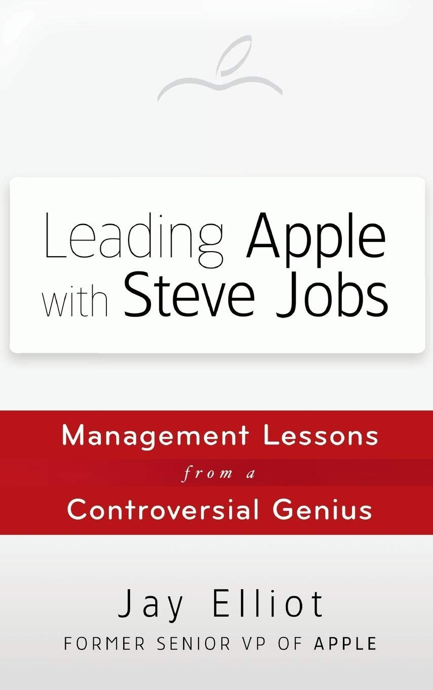
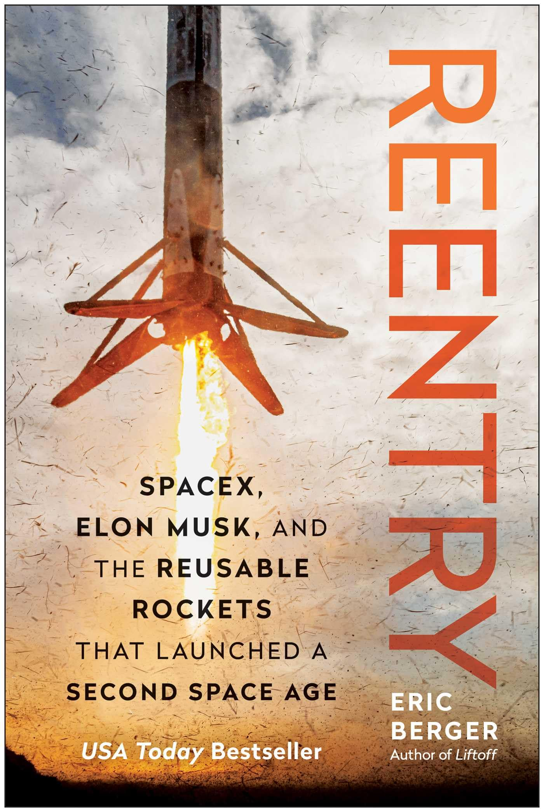
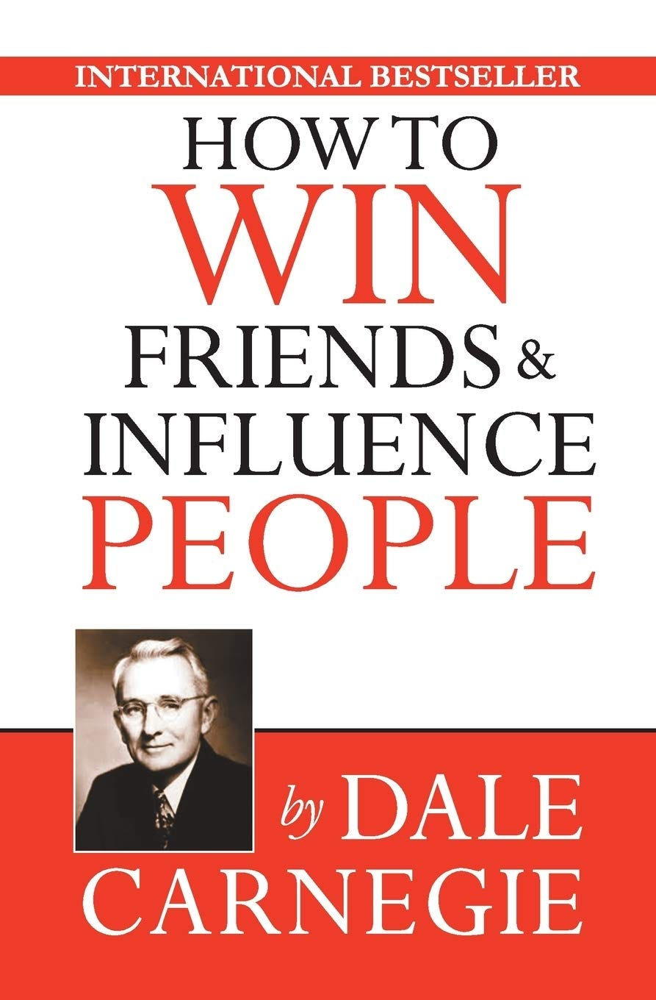
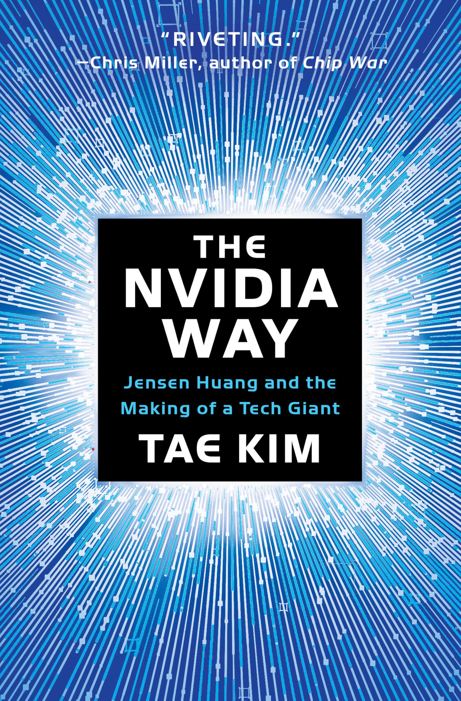
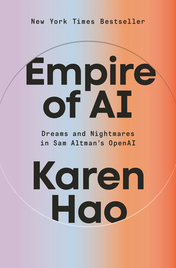

Surely You're Joking Mr. Feynman
by Richard P. Feynman (Author), Ralph Leighton (Author)
My biggest takeaway:
Reading Surely You’re Joking, Mr. Feynman! taught me a lot about Richard Feynman’s curious, humble approach to life and learning. He explored everything from physics to art to safecracking with a deep sense of curiosity and fun, which inspired me to take more interest in how things work and to always ask questions. What I admired most was how he believed that knowledge shouldn’t be a luxury, he wanted learning to be available to everyone, and he had a gift for explaining complicated ideas in simple, clear ways. This made me realize that good teaching isn’t about sounding smart, but about helping others understand. Feynman showed me how powerful it can be to look deeper, stay curious, and make learning something that’s open to all.

American Prometheus: The Triumph and Tragedy of J. Robert Oppenheimer
by Kai Bird (Author), Martin J. Sherwin (Author)
My biggest takeaway:
Reading American Prometheus: The Triumph and Tragedy of J. Robert Oppenheimer taught me a lot about leadership, responsibility, and the power of our choices. Oppenheimer led one of the most important scientific projects in history, but what stood out most was how he struggled with the moral weight of his work. He showed me that being a leader isn’t just about being smart or in charge it’s about thinking deeply about how your actions affect others and standing up for your values, even when it’s hard. This book helped me understand that our work can have a huge impact on the world, and that true leadership means balancing success with a strong sense of ethics and responsibility.

Steve Jobs
by Walter Isaacson (Author)
My biggest takeaway:
Reading Steve Jobs by Walter Isaacson taught me the power of high standards, focus, and leadership. Jobs took every project seriously, no matter how small, and believed that good work should speak for itself. That idea stuck with me it showed me that when you care deeply about what you create, people will notice. His intense focus and refusal to settle for anything less than excellence taught me to treat all of my work with the same level of care and passion. I also learned that strong leadership means holding yourself and others to a higher standard, pushing boundaries, and staying fully committed to your vision. This book inspired me to approach everything I do with pride, focus, and a constant drive to do it better.
Elon Musk
by Walter Isaacson (Author)
My biggest takeaway:
Reading Elon Musk by Walter Isaacson taught me the importance of questioning everything and keeping an open mind, no matter the field. What stood out most was Musk’s refusal to say, “That’s not my area” instead, he dove into every problem, learned what he needed, and took action. This mindset showed me that real progress comes from curiosity and the willingness to take on challenges outside your comfort zone. I also learned that leadership means stepping up when something needs to be done, even if it’s not your job. Musk’s example pushed me to stay open, think critically, and never be afraid to take initiative when it counts.

Leading Apple With Steve Jobs: Management Lessons From a Controversial Genius
by Jay Elliot (Author)
My biggest takeaway:
Reading Leading Apple With Steve Jobs: Management Lessons From a Controversial Genius really stood out to me because it came from someone who worked closely with Jobs and offered a more personal, behind the scenes view of his leadership. I appreciated learning about the lesser known side of Jobs how he pushed not just for great products, but for a company culture where innovation was expected from everyone. The book showed how he made sure middle management couldn’t kill ideas too early, and how he encouraged bold thinking at every level. I try to apply these lessons in my own life by staying open to new ideas, encouraging creative thinking, and making sure I never let structure or hierarchy stop progress.

Reentry: SpaceX, Elon Musk, and the Reusable Rockets that Launched a Second Space Age
by Eric Berger (Author)
My biggest takeaway:
Reading Reentry: SpaceX, Elon Musk, and the Reusable Rockets that Launched a Second Space Age gave me a deep understanding of SpaceX’s intense work culture and what it really takes to push the boundaries of innovation. One of the biggest takeaways for me was how deeply committed the engineers were they often sacrificed their personal time and comfort in pursuit of perfection, knowing that in space exploration, there’s no room for failure. The book gave a detailed look into the demanding environment Elon Musk creates, where expectations are incredibly high and excuses aren’t accepted. It also highlighted how Musk pushes engineers to think bigger, move faster, and solve problems that seem impossible. I came away with a strong appreciation for the level of discipline, sacrifice, and drive it takes to be part of something truly groundbreaking and it inspired me to carry that same work ethic and mindset into everything I do.

How to Win Friends and Influence People
by Dale Carnegie (Author)
My biggest takeaway:
Reading this book helped me grow as an engineer by sharpening my communication skills and teaching me how to approach challenges rom multiple perspectives. In engineering, collaboration is essential, and I’ve learned how to better listen, understand differing viewpoints, and build common ground when working with teammates. I also developed strategies for navigating difficult conversations, which is critical for resolving conflicts and ensuring projects move forward effectively.

The Nvidia Way: Jensen Huang and the Making of a Tech Giant
by Tae Kim (Author)
My biggest takeaway:
This book gave me a deeper insight on the culture of NVIDIA as a company. I learned how employees work and how they manage their intensive workload in the comapany, it also showed me how jensen Huang steers the company in great detail, putting the right amount of pressuare on employees to lead to success in their products. I liked how it touched down on the first days of the company and how the founders were able to build this enterprice to one of the most valuable companies in the world.
Introduction to Machine Learning with Python: A Guide for Data Scientists
by Andreas C. Müller (Author), Sarah Guido (Author)
My biggest takeaway:
(In progress!)
The Odyssey
by Homer (Author)
My biggest takeaway:
I learned a lot from reading The Odyssey by Homer. The story follows Odysseus as he struggles to return home after the Trojan War, facing monsters, gods, and temptations along the way. My biggest takeaway is that perseverance and cleverness, even in the face of overwhelming challenges, are what ultimately allow him to reunite with his family and reclaim his place as a leader.

The Empire of AI
by Karen Hao
My biggest takeaway:
This Book was extremely power to me because it shows both sides of the arising technology of AI and its implications it has in the life of other people. It dives into the extreme topics of how AI & data collection has become a black market in other countries, tedious tasks like data labeling are underpaid in countries like Venezuela and Kenya. I also enjoyed learning about the people pushing this revolution like sam Altman and other AI researchers at OPENAI.